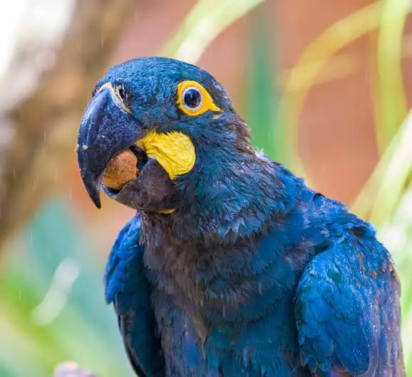
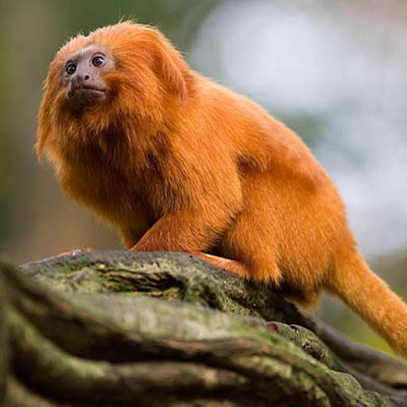

Vida
Selvagem
A natureza é cheia de vida, cores e equilíbrio. Cuidar dela é cuidar do nosso futuro.

Arara-azul-de-lear
esteve à beira da extinção na década de 1980 devido à perda de habitat, causada principalmente pela ação humana. Apesar do aumento populacional recente, a espécie continua ameaçada pela degradação ambiental e fragmentação do habitat.
Mico Leão Dourado
O mico-leão-dourado enfrentou risco extremo de extinção devido à destruição e fragmentação da Mata Atlântica, além do tráfico de animais silvestres.


Por que devo me preocupar?
Este gráfico mostra a área desmatada
em alguns biomas do país nos ano de
2024.
Este gráfico mostra um aumento significativo na quantidade de pets abandonados entre 2022 e 2024, com destaque para o aumento de 32,4% em 2024 em relação ao ano anterior.